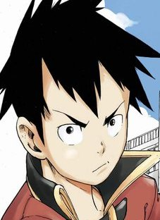
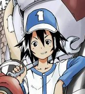

Dans cette histoire nous évoluons dans un pays (le Japon visiblement) dans le quel la mécanique et la robotique est très avancée et populaire. Elle est présente et utilisée partout dans la société.
Dans les domaines de l’armements militaires, l’aide aux personnes, la sécurité intérieure et surtout les disciplines sportives.
Toutes les écoles du pays ont des clubs consacrée aux "mecha" et participent à des compétitions sportives dans le but montrer leur prouesse et leur ingéniosité.
Une grande partie du budget des écoles est alloué à ces clubs pour leur permettre de réaliser leur projet.
Vu qu’il est probable d’avoir plusieurs clubs de robotique dans une seul école, tous ces clubs vont devoir s’affronter pour savoir qui aura la plus grosse part du budget et qui pourra participer aux compétitions national inter école…
Nous allons suivre dans cette histoire Tako un Jeune garçon de 15 ans qui fait son entrée au lycée.
Nonchalant, pervers et un peu bagarreur, il est plus intéressé par les filles que par les compétions de mecha.
Il va faire la rencontre de Pia une mécano du club le plus faible du lycée.
Elle voit en Tako le potentiel pour être un bon pilote de mecha et va lui demander de rejoindre son club.
Pour des raisons inconnues il va refuser son offre mais va intégrer le club de Pia pour lui venir en aide dans un moment critique.
Tako va aussi faire la rencontre de M’on, la grande star du lycée et le meilleur pilote de tous les clubs de l’école.
Jaloux de sa popularité dans l'école, une rivalité va naitre entre eux et il va rejoindre le club de Pia définitivement pour se confronter à lui.

Tako : Le personnage principal de cette histoire.
Un peu solitaire et turbulent, son désintérêt en apparence pour le monde de la mécanique nous montre un personnage à la marge.
Les différentes péripéties nous décrit un garçon gentil avec un sens de la justice aigue.
Il a des rêves et des ambitions, on découvre plus tard qu’il voulait devenir pilote et qu’il aime les mecha.
Mais un point sombre dans son passer lui a transmis le doute et la peur de l’échec.

Pia : Jeune fille en troisième année dans le lycée de notre héros, c’est la spécialiste en mécanique. C’est elle qui va guider Tako dans le monde de la compétition mécanique.
Un peu garçon maquer, on l’a décrit comme une fille avec du caractère, passionnée et proche de sa famille.
Elle accorde une grande importance aux tournois de mecha vu que c’est sa dernière année au lycée.
Ce que je remarque principalement dans ce manga c’est que l’auteur à vraiment assimilé les codes du Shonen et des mangas sportifs.
C’est un grand mélange de pop culture et de tradition Japonaise.
*Le shonen est une catégorie de manga spécifique destinée à un certain publique. *
Que ce soit dans la narration, le style graphique ou les archétypes de personnage décrit, la formule est là.
Je vois dans le héros les traits de personnage comme Naruto ou Yusuke (yu yu hakusho). Ce sont des personnages à la marge et turbulent, qui vont prouver au monde leur valeur et changer un système ou un mode de pensé injuste. Le style graphique et le découpage des cases est bien maitrisée, on arrive à suivre l’action sans problème et les mecha sont très bien représentés.
Et comme dans tout bon manga d’action, on retrouve la célèbre devise du magazine shonen jump : amitié, effort, victoire.
On retrouve ces 3 éléments dans notre manga.
La compétition mécanique et sportive, racontée dans Meckaz est un travail d’équipe et un effort commun de plusieurs individualités :
-Le pilote avec de bon réflexe en grande forme physique.
-La mécanicienne qui s’occupe la maintenance et des performances du mecha.
-Des spécialistes en électronique ou informatique.
Une des composantes récurrentes des shonen c’est le tournoi (Dragon ball, Naruto, Hunter X Hunter ou tous les mangas sportifs comme slam dunk ou eyeshield 21).
Le tournoi dans le manga d’action est un gimmick narratif incontournable, qui permette de mettre en place un contexte, des conflits et des enjeux dans une histoire de manière simple.
C’est une façon simple de présenter de nouveau personnage et de mettre à l’épreuve notre héros avec de nouveau défi toujours plus difficile à surmonter.
En plus du shonen sportif la deuxième influence majeure du mange sont les mecha. Ils sont extrêmement présents dans la pop culture japonaise (Gundam, Goldorak, Macross, Code Geass).
C’est une façon de parler de transhumanisme (améliorer ou repousser les limites des capacités humaines avec les nouvelles technologies), de voire comment vont évoluer les confis armée dans le monde ou de comment l’auteur imagine le futur.
Le mélange des genres mecha + sport dans Meckaz est plutôt original.
(Proposer du mecha sur le marché du manga français est assez risqué, ce n’est pas très populaire chez nous, malgré le succès de titre comme Code Geass, Envgelion ou même Pacific Rim au cinéma).
C’est un bon élève qui applique les codes du genre sans dévier de la route avec un style graphique efficace, surtout pour les scènes d’action avec les mecha.